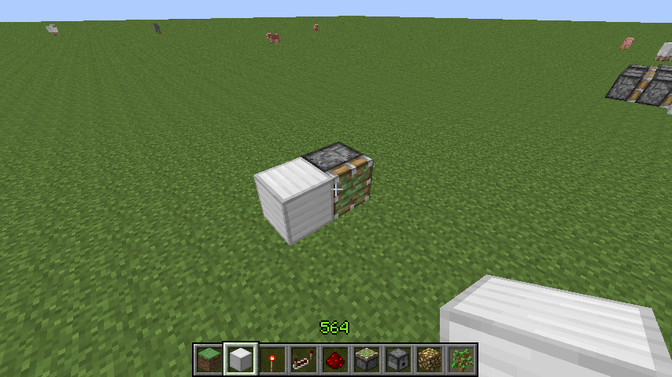
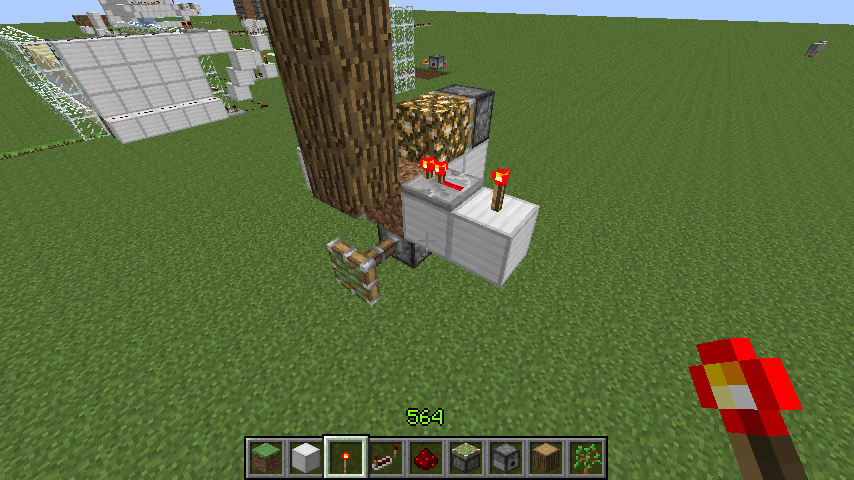

首页
上一页
192
193
194
195
196
197
197
198
199
200
201
202
下一页
末页
defanive2
无尽黑夜
14
这个就是1.5以前旧版的树场V3的底部结构了
中央的泥土是种树的地方
——来自 MCLive
13810楼
2013-03-19 07:44
defanive2
无尽黑夜
14
把内部结构打开之后可以看到其实是这样的
当树苗长成之后，木头作为实体方块就传送了中继器的信号
进而熄灭了火把，把信号下传
——来自 MCLive
13811楼
2013-03-19 07:46
defanive2
无尽黑夜
14
打开了内部结构看其实是这样的
平面横向用于树苗长成的检测
平面纵向则是活塞和被推出的木头
——来自 MCLive
13812楼
2013-03-19 07:49
defanive2
无尽黑夜
14
但是要用到发射器的话似乎就杯具了
平面内纵向肯定是无法腾出空间铺电路的
横向左侧已经被发射器的电路占领了
那么要判断树苗成长的电路应该铺设在哪里呢
——来自 MCLive
13813楼
2013-03-19 07:54
defanive2
无尽黑夜
14
如果尝试从下方获得信号进行判断的话
似乎也走不通
中继器可以给木头充能，但是下方距离2格的红石无法获得能量
而泥土则是种树不可缺少的
——来自 MCLive
13814楼
2013-03-19 07:58
defanive2
无尽黑夜
14
而如果要尝试用BUD进行检测的话
似乎布线空间也不允许
必须在1格高的空间内完成布线
（似乎只能利用我设计的动力铁轨BUD来完成了）
再者，考虑到种树有4个产生BUD的事件
1、树苗被种下
2、树苗长成树干
3、树干被活塞推出
4、活塞收回
因此如果要做BUD进行检测的话
必须要有一个4位计数器，因为我们只想检测2号事件
这样看来BUD就太麻烦了
——来自 MCLive
13815楼
2013-03-19 08:02
defanive2
无尽黑夜
14
这样看起来似乎布线非常杯具
无法进行改造了
——来自 MCLive
13816楼
2013-03-19 08:06
defanive2
无尽黑夜
14
这时候就要上我的电路设计了
个人觉得非常巧妙
在这里利用的是活塞BUD的特性
活塞可以接受上方距离2格的信号
例如途中活塞的正上方的铁块就被弱充能了
但是，由于红石线只有2格的更新范围
而红石线距离活塞有3格，因此没有更新到活塞
活塞自然就无法意识到自己应该伸出
产生了BUD的效应
——来自 MCLive
13817楼
2013-03-19 08:09
defanive2
无尽黑夜
14
而给活塞提供了一次更新之后
活塞就意识到了上方2格的铁块被弱充能了
于是就伸出
——来自 MCLive
13818楼
2013-03-19 08:11
defanive2
无尽黑夜
14
同样的道理，当信号消失之后
由于所有的方块都在2格的更新范围外
因此活塞都无法被更新
也就无法意识到信号已经消失了
再次产生了BUD效应
——来自 MCLive
13819楼
2013-03-19 08:11
defanive2
无尽黑夜
14
此时任何一个更新都导致活塞意识到2格外的能量源已经消失了
因此活塞就会后知后觉的收回
——来自 MCLive

13820楼
2013-03-19 08:12
defanive2
无尽黑夜
14
运用这个道理，可以设计出巧妙的电路
感应树种长成树苗
——来自 MCLive
13821楼
2013-03-19 08:14
defanive2
无尽黑夜
14
树种长成树木之后，树木的底端被充能
与之前演示的情况相同
原木距离活塞上方2格
此时活塞就产生了BUD效应
——来自 MCLive
13822楼
2013-03-19 08:15
defanive2
无尽黑夜
14
此时我们只需要给活塞提供一个适当的更新
活塞就可以意识到树木已经长成了
——来自 MCLive
13823楼
2013-03-19 08:16
defanive2
无尽黑夜
14
而当树木被处理之后
此时活塞也形成了BUD效应
上方的能源消失了，但是由于2格外的距离活塞无法意识到
因此我们需要给一个适当的更新来让活塞复位
——来自 MCLive

13824楼
2013-03-19 08:18
defanive2
无尽黑夜
14
于是现在整个电路的重点就在于如何提供合理的更新
——来自 MCLive
13825楼
2013-03-19 08:19
defanive2
无尽黑夜
14
不过在考虑如何设计电路之前
先了解一下这种高速脉冲发生器
图中的玻璃需要换成实体方块
在这里用玻璃只是方便大家观察而已
在下方方块的4个面都插上红石火把，顶上放一个红石
四个火把上分别放一个实体方块
就可以产生高速稳定的脉冲
——来自 MCLive
13826楼
2013-03-19 08:22
defanive2
无尽黑夜
14
同样的，我们的发射器也需要一个高速的脉冲发射骨粉
因此把这个脉冲做在下面
并且把输出的信号引到发射器即可
这样发射器就可以以最高速度发射骨粉了
PS 这样的设计在1.5之前需要给发射器加一个稳定能源才可以使用
发射器1.5更新之后变化挺大
——来自 MCLive
13827楼
2013-03-19 08:24
defanive2
无尽黑夜
14
这个高速脉冲同时也引到活塞下方
这样就给活塞提供持续稳定的更新
——来自 MCLive
13828楼
2013-03-19 08:26
defanive2
无尽黑夜
14
而当发射器不断发射骨粉的时候
树苗长成了树木，原木被充能，BUD效应产生
同时高速脉冲也不断给活塞提供了更新
因此在树苗长成的下1tick活塞就能够马上意识到树木长成了
也就完成了检测树苗长成的难题
——来自 MCLive
13829楼
2013-03-19 08:28
defanive2
无尽黑夜
14
接下来给活塞加上一个方块，前方如图简单布置电路
这样当活塞意识到树木长成之后
就会推出实体方块
红石火把给实体方块充能，进而给红石线充能
从而停止这个高速运转的脉冲
非常巧妙的布线
——来自 MCLive
13830楼
2013-03-19 08:30
defanive2
无尽黑夜
14
当树木长成之后，结果就是这样
脉冲停止工作了
——来自 MCLive
13831楼
2013-03-19 08:30
defanive2
无尽黑夜
14
而接下来也很简单，把信号提供给各个树木的处理装置即可
图中做演示就把信号引给了后方的处理活塞
PS 实际上V3树场的处理系统是比较复杂的
2个处理树叶和后方推树木的活塞电路组
当然，信号都有了，只需要布线引给电路组的入口即可
——来自 MCLive
13832楼
2013-03-19 08:34
defanive2
无尽黑夜
14
而这个时候就要处理产生的第二个BUD效应了
虽然木头被处理了，上方的信号源也消失了
但是下方的感应活塞无法接受到更新
产生了BUD效应
接下来就要提供一个适当的更新
让活塞意识到已经处理完树木了
——来自 MCLive
13833楼
2013-03-19 08:36
defanive2
无尽黑夜
14
解法很简单，在此处放一个中继器并调整延时即可
中继器延时之后给前方的红石线提供了能量
改变了红石线的信号强度
因此也就更新了活塞
——来自 MCLive
13834楼
2013-03-19 08:37
defanive2
无尽黑夜
14
在此设为2tick的中继器即可
——来自 MCLive
13835楼
2013-03-19 08:38
defanive2
无尽黑夜
14
因此整个机器感应的电路就完成了
把同样的电路布置做给V3树场即可
这个电路的布置十分巧妙
个人非常满意自己的设计
——来自 MCLive
13836楼
2013-03-19 08:39
defanive2
无尽黑夜
14
把刚刚演示的电路合成到树场V3就可以了
加仔细的装潢布置和封装就可以做到1.5版的树场V3
左侧是总开关和玩家的站位
打开开关之后玩家只需要一直按着鼠标右键放树苗
就可以不断刷树苗刷木头了
——来自 MCLive
13837楼
2013-03-19 08:42
defanive2
无尽黑夜
14
来一张树场V3后方树叶处理和树干处理的电路
上一次讲解过电路原理和信号顺序了
根据原理和顺序不难做出
——来自 MCLive
13838楼
2013-03-19 08:43
defanive2
无尽黑夜
14
这个就是今天直播的内容了
树场V3升级1.5的设计
至于树场V2，目测即使升级了效率也不会提高很多
比V3快是肯定的，但是也快不了多少
V2可以准备退役了
PS 至于V1已经退役很久了
PS PS 准备有时间的时候把一些废弃工程给拆了
腾出空间做新的工程
例如树场V1/V2，刷沙机，都可以拆了
——来自 MCLive
13839楼
2013-03-19 08:47
首页
上一页
192
193
194
195
196
197
197
198
199
200
201
202
下一页
末页